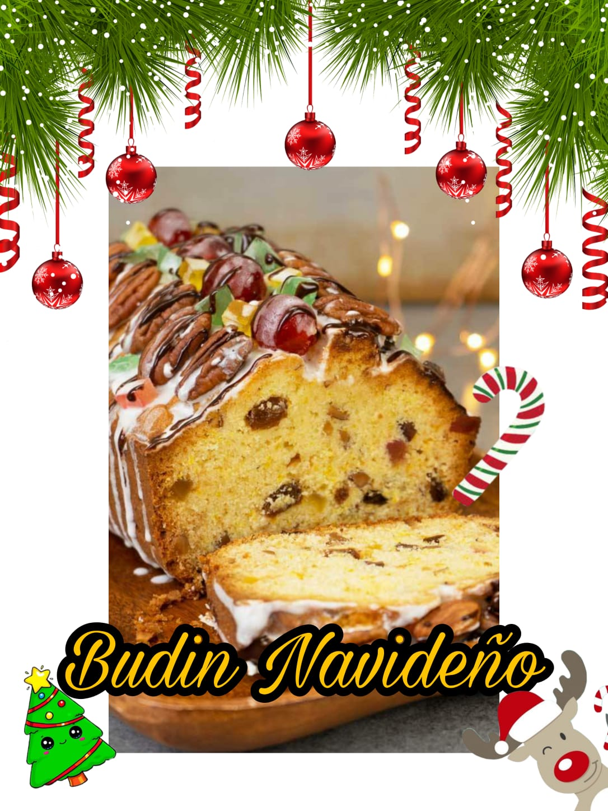

INGREDIENTES:
PRE FERMENTO: Empezamos con el prefermento o Poolish. En un bol pequeño mezclamos la leche templada, no caliente, con la levadura y dejamos que esta se diluya. Añadimos 130 gramos de la harina y 20 gramos de azúcar y mezclamos bien durante unos minutos con un tenedor, hasta que se vuelva una masa pegajosa y homogénea. Tapamos el bol con film transparente y dejamos que fermente durante 1 hora. En un bol grande incorporamos el prefermento, los huevos enteros, el resto del azúcar, la pizca de sal, el resto de harina, el agua y las ralladuras de limón y naranja. Los únicos ingredientes que no añadimos son la mantequilla, las uvas pasas y las frutas escarchadas.
PREPARADO DE LA MASA: Comenzamos el proceso de amasado, inicialmente dentro del bol y luego sobre una superficie de trabajo. No enharinéis ni engraséis la superficie, aunque al principio la masa se quede pegada a la mesa. Al final acabará despegándose por completo, os lo prometo. Comenzamos el proceso de amasado en el que estaremos unos 25 minutos. Con este tiempo habremos conseguido una masa elástica. En este momento añadimos la mantequilla cortada en cuadraditos. Vamos incorporándola poco a poco, y amasando entre cada incorporación. En este momento estaréis pensando que en menuda os habéis metido, que es imposible que semejante pasta se pueda llegar a convertir en una bola. No desesperéis, os prometo que habrá final feliz. A medida que vamos añadiendo trozos de mantequilla. La masa deja de tener consistencia elástica y se convierte casi en una papilla, sólo el amasado convertirá esta textura en la que queremos conseguir. Necesitamos, como mínimo otros 30 minutos para que la masa se convierta en algo brillante, y que se despegue por completo de la mesa de trabajo. La prueba de que la masa está lista es que si la estiramos, esta no se romperá. Podremos conseguir una sábana casi traslúcida sin que haya roturas. La textura será brillante y muy manejable.
REPOSO DEL PANETON Y PRESENTACION FINAL: Hacemos una bola con la masa y la colocamos dentro de un bol ligeramente enharinado. Tapamos el bol con un paño y lo dejamos fermentar durante 2 horas 30 minutos. En mi caso, para asegurarme una temperatura idónea. Lo dejo levar dentro del horno previamente calentado durante unos segundos, pero apagado, claro. La intención es conseguir un ambiente de unos 22º C a 25º C para que la masa trabaje en las mejores condiciones. Pasado este tiempo vemos que la masa ha crecido hasta triplicar su volumen. Rompemos las burbujas manipulándola y sobre una superficie de trabajo incorporamos las uvas pasas y las frutas escarchadas en trocitos. Yo las uvas las suelo dejar a remojo previamente para rehidratarlas y que estén más tiernas. Amasamos para integrar bien estos nuevos ingredientes y formamos una bola con la superficie bien lisa. Colocamos la bola en el molde de papel especial de panettone. Repetimos el proceso de levado durante 2 o 3 horas. El panettone habrá vuelto a crecer desbordándose del molde. Con mucho cuidado hacemos una cruz en la parte superior. Colocamos 4 nueces de mantequilla que le dará el tono dorado durante el horneado. Horneamos con el horno previamente caliente a 180º C durante 30 minutos mínimo. Ya sabéis que cada horno es un mundo y que pueden variar el tiempo de horneado, a más o menos tiempo. Debemos tener la precaución de tapar el panettone con papel de aluminio a los 10 minutos de cocción. Para evitar que se tueste demasiado. Retiramos del horno y dejamos que se enfríe sobre una rejilla. Es importante que una vez horneado el panettone, lo dejemos enfriar boca abajo. Para así evitar que se nos baje y conseguir una miga mucho mas esponjosa. Con un mínimo de 3 horas para que no baje
INGREDIENTES:

Para comenzar colocamos las frutas a macerar con el coñac 24 horas antes de preparar el budín. (Este proceso se puede acelerar colocando las frutas y el coñac en un bowl de vidrio tapado en el microondas y cocinar en máximo por 2 minutos, luego dejar enfriar tapado). Enseguida, batimos la manteca pomada con el azúcar, la miel y la ralladura hasta formar una crema, incorporamos los huevos de a uno sin dejar de batir, tamizamos la harina con el leudante e incorporamos a la preparación con espátula, con movimiento envolvente. La masa debe resultar lisa y no debe trabajarse más de unos segundos. Tamizar las frutas para retirar todo excedente líquido y espolvorearlas con dos cucharadas de harina extra. Incorporar a la preparación. Volcar en un molde forrado con papel manteca. Se puede decorar la superficie con almendras enteras. Hornear en horno 170° C por 55 a 60 minutos. Dejar enfriar en el molde por 5 minutos, desmoldar y dejar enfriar sobre rejilla. Opcionalmente se puede pincelar con coñac o ron y dejar envuelto hasta un mes antes de consumirlo. La operación del pincelado puede repetirse semanalmente